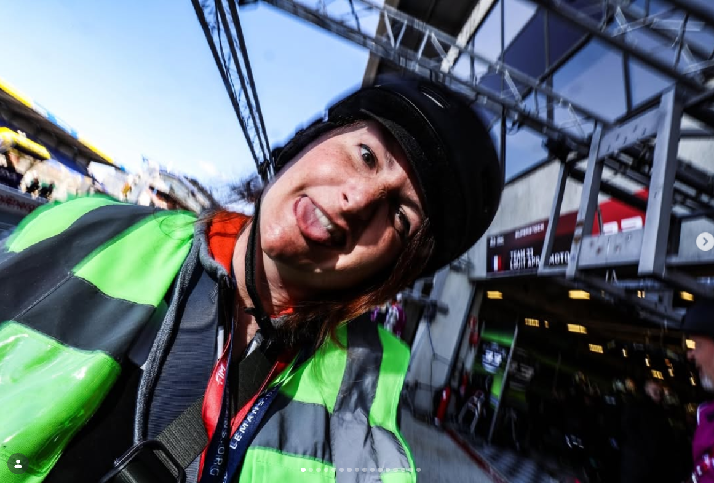
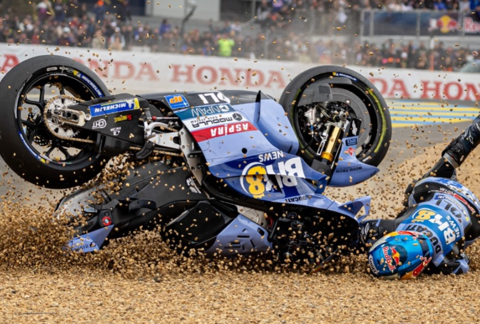

Derrière l'objectif
THÉRY
GO2.
Une photographe à l'écoute, au service de vos projets.

France · InternationalGo2Création
L'INSTANT
JUSTE.
Photographier ce qui se joue entre la machine, le pilote et la piste.
Spécialisée en sports mécaniques, Théry accompagne particuliers et professionnels sur leurs projets circuit. Son travail raconte autant la performance que les regards, la préparation et les émotions hors champ.
Disponible pour des événements partout en France et à l'international, Go2Création construit chaque reportage au plus près de vos besoins.
APPROCHE
ÉCOUTE & PROXIMITÉ
ACTION & ÉMOTION
PARTICULIERS & PROFESSIONNELS

« Faire ressentir la course, même longtemps après l'arrivée. »